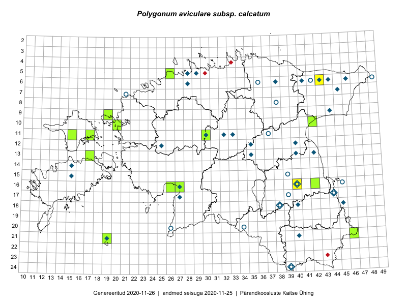

Polygonum aviculare subsp. calcatum — lamav linnurohi
Polygonaceae :: Polygonum calcatum Lindm. (78); Polygonum aviculare subsp. calcatum (Lindm.) Thell. (2)

Kaart põhineb 80 kirjel:
vaatlusi 20
herbaareksemplare 60
Taime kaasaegsed ja ajaloolised leiukohad asuvad 48 ruudus.
Tingmärgid ja ruutude arvud periooditi (U1 / V2 )
█ 2006–2020 (14/–)
◆/◇ 1971–2005 (30/31)
○ 1921–1970 (11/2)
+ kuni 1920 (0/0)
× hävinud (–/0)
? kaheldav (–/0)
| Ruut | Leidja(d) | Leiuaeg | Kirje |
|---|---|---|---|
| 07-45 | Vilma Kuusk | 1985-09-16 | ruut/ala: Polygonum calcatum Lindm. |
| 09-44 | Heljo Krall, Malle Leht | 1981-09-07 | ruut/ala: Polygonum calcatum Lindm. |
| 09-44 | Vilma Kuusk, Maria Abakumova | 1981-09-07 | ruut/ala: Polygonum calcatum Lindm. |
| 11-32 | Vilma Kuusk | 1974-08-26 | ruut/ala: Polygonum calcatum Lindm. |
| 11-33 | Vilma Kuusk | 1998-08-20 | ruut/ala: Polygonum calcatum Lindm. |
| 12-35 | Vilma Kuusk, Tiiu Kull, Malle Leht | 1984-07-24 | ruut/ala: Polygonum calcatum Lindm. |
| 06-28 | T. Ploompuu | 1988 | ruut/ala: Polygonum calcatum Lindm. |
| 24-39 | M. Kask | 1965-06-11–1971-08-15 | ruut/ala: Polygonum calcatum Lindm. |
| 11-30 | V. Kuusk | 1974-08-29 | ruut/ala: Polygonum calcatum Lindm. |
| 12-25 | V. Kuusk, L. Viljasoo | 1986-07-24 | ruut/ala: Polygonum calcatum Lindm. |
| 17-44 | Vilma Kuusk, Malle Leht, Maria Abakumova | 1983-08-02 | ruut/ala: Polygonum calcatum Lindm. |
| 18-38 | Vilma Kuusk, Heljo Krall | 1984-09-13–1985-07-11 | ruut/ala: Polygonum calcatum Lindm. |
| 18-40 | 1975 | ruut/ala: Polygonum calcatum Lindm. | |
| 14-15 | Heljo Krall, Vilma Kuusk, Maria Abakumova | 1984-06-28–1985-08-06 | ruut/ala: Polygonum calcatum Lindm. |
| 13-35 | H. Krall, V. Kuusk, M. Abakumova, T. Kull, M. Leht | 1984-07-25 | ruut/ala: Polygonum calcatum Lindm. |
| 13-40 | Ü. Niinemets | 1989 | ruut/ala: Polygonum calcatum Lindm. |
| 15-15 | M. Leht, T. Kull, V. Kuusk, M. Abakumova | 1985-08-07 | ruut/ala: Polygonum calcatum Lindm. |
| 21-40 | Linda Viljasoo | 1975-09–1979-09 | ruut/ala: Polygonum calcatum Lindm. |
| 06-43 | Eerik Leibak, Thea Kull | 2014-09-11 | ruut/ala: Polygonum aviculare subsp. calcatum (Lindm.) Thell. |
| 16-40 | Peedu Saar | 2016-10-25 | ruut/ala: Polygonum aviculare subsp. calcatum (Lindm.) Thell. |
| 13-42 | E. Krall | 1999-08-11 | TAA0090138: Polygonum calcatum Lindm. |
| 16-40 | L. Viljasoo, H. Karu | 1957-09-07 | TAA0090144: Polygonum calcatum Lindm. |
| 16-40 | L. Viljasoo, H. Karu | 1957-09-02 | TAA0090150: Polygonum calcatum Lindm. |
| 20-34 | M. Kask | 1965-08-28 | TAA0090153: Polygonum calcatum Lindm. |
| 06-42 | V. Kuusk, H. Tamm | 1961-07-01 | TAA0090154: Polygonum calcatum Lindm. |
| 16-40 | Z. Izvekova | 1947-09-09 | TAA0090159: Polygonum calcatum Lindm. |
| 16-40 | S. Talts | 1947-08-19 | TAA0090160: Polygonum calcatum Lindm. |
| 20-34 | M. Kask | 1965-08-28 | TAA0090163: Polygonum calcatum Lindm. |
| 15-39 | Z. Izvekova | 1947-08-17 | TAA0090165: Polygonum calcatum Lindm. |
| 20-34 | M. Kask | 1965-08-28 | TAA0090168: Polygonum calcatum Lindm. |
| 06-36 | E. Tammemägi | 1958-08-05 | TAA0090169: Polygonum calcatum Lindm. |
| 08-38 | M. Kask | 1956-08-05 | TAA0090170: Polygonum calcatum Lindm. |
| 11-37 | L. Viljasoo, M. Kask | 1964-09-23 | TAA0090171: Polygonum calcatum Lindm. |
| 11-37 | L. Viljasoo, M. Kask | 1964-09-23 | TAA0090172: Polygonum calcatum Lindm. |
| 16-40 | Ülo Niinemets | 1990-08-20 | TAA0090178: Polygonum calcatum Lindm. |
| 06-49 | V. Kuusk | 1964-07-28 | TAA0090179: Polygonum calcatum Lindm. |
| 16-40 | L. Viljasoo, H. Karu | 1957-09-02 | TAA0090191: Polygonum calcatum Lindm. |
| 16-40 | M. Kask | 1967-09-02 | TAA0090411: Polygonum calcatum Lindm. |
| 11-32 | V. Kuusk | 1974-08-26 | TAA0090412: Polygonum calcatum Lindm. |
| 11-32 | V. Kuusk | 1974-08-26 | TAA0090413: Polygonum calcatum Lindm. |
| 11-32 | V. Kuusk | 1974-08-26 | TAA0090414: Polygonum calcatum Lindm. |
| 16-40 | M. Kask | 1947-09-13 | TAA0090415: Polygonum calcatum Lindm. |
| 17-27 | H. Krall | 1997-08-09 | TAA0090416: Polygonum calcatum Lindm. |
| 17-27 | H. Krall | 1997-08-09 | TAA0090417: Polygonum calcatum Lindm. |
| 21-19 | L. Viljasoo | 1972-09-19 | TAA0090418: Polygonum calcatum Lindm. |
| 06-38 | M. Kask | 1971-09-15 | TAA0090419: Polygonum calcatum Lindm. |
| 06-46 | M. Kask | 1973-08-14 | TAA0090420: Polygonum calcatum Lindm. |
| 18-45 | M. Kask | 1975-09-11 | TAA0090421: Polygonum calcatum Lindm. |
| 18-45 | M. Kask | 1975-09-11 | TAA0090422: Polygonum calcatum Lindm. |
| 09-44 | V. Kuusk | 1981-09-07 | TAA0090423: Polygonum calcatum Lindm. |
| 06-28 | Toomas Kukk | 1993-08-03 | TAA0090424: Polygonum calcatum Lindm. |
| 16-40 | S. Talts | 1947-08-18 | TAA0090425: Polygonum calcatum Lindm. |
| 11-33 | V. Kuusk | 1974-08-25 | TAA0090426: Polygonum calcatum Lindm. |
| 11-33 | V. Kuusk | 1974-08-25 | TAA0090427: Polygonum calcatum Lindm. |
| 20-26 | V. Kuusk | 1967-08-22 | TAA0090428: Polygonum calcatum Lindm. |
| 05-29 | V. Kuusk | 1977-08-09 | TAA0090429: Polygonum calcatum Lindm. |
| 12-40 | Ülo Niinemets | 1989-08-12 | TAA0090430: Polygonum calcatum Lindm. |
| 24-39 | M. Kask | 1971-08-15 | TAA0090431: Polygonum calcatum Lindm. |
| 17-44 | L. Viljasoo | 1955-09-04 | TAA0090432: Polygonum calcatum Lindm. |
| 21-46 | Toomas Kukk | 2008-08-11 | TAA0090981: Polygonum calcatum Lindm. |
| 21-46 | Toomas Kukk | 2008-08-11 | TAA0090982: Polygonum calcatum Lindm. |
| 05-29 | Heinrich Aasamaa | 1992-09-03 | TAM0053196: Polygonum calcatum Lindm. |
| 16-40 | Vally Vehik ( Kruhberg) | 1931-07-28 | TAA0115525: Polygonum calcatum Lindm. |
| 05-28 | Tõnu Ploompuu | 1990-09-04 | TALL C009808: Polygonum calcatum Lindm. |
| 06-44 | Tõnu Ploompuu | 1990-09-11 | TALL C009809: Polygonum calcatum Lindm. |
| 06-41 | Tõnu Ploompuu | 1990-09-13 | TALL C009810: Polygonum calcatum Lindm. |
| 06-43 | Tõnu Ploompuu | 1990-09-13 | TALL C009811: Polygonum calcatum Lindm. |
| 06-44 | Tõnu Ploompuu | 1990-09-10 | TALL C009812: Polygonum calcatum Lindm. |
| 11-30 | Toivo Sepp | 2015-08-27 | TAA0140098: Polygonum calcatum Lindm. |
| 11-30 | Toivo Sepp | 2015-08-27 | TAA0140099: Polygonum calcatum Lindm. |
| 11-15 | Peedu Saar, Ott Luuk | 2017-09-13 | TAA0141277: Polygonum calcatum Lindm. |
| 11-17 | Toomas Kukk, Indrek Tammekänd | 2017-09-11 | TAA0141888: Polygonum calcatum Lindm. |
| 16-26 | Indrek Tammekänd | 2017-09-19 | TAA0143747: Polygonum calcatum Lindm. |
| 16-27 | Indrek Tammekänd | 2017-09-27 | TAA0143748: Polygonum calcatum Lindm. |
| 16-42 | Peedu Saar | 2018-10-06 | TAA0146722: Polygonum calcatum Lindm. |
| 13-17 | Ott Luuk, Peedu Saar | 2016-08-29 | TAA0146057: Polygonum calcatum Lindm. |
| 21-19 | Ott Luuk, Meeli Mesipuu | 2016-09-10 | TAA0147331: Polygonum calcatum Lindm. |
| 10-20 | Ott Luuk | 2019-09-18 | TAA0150294: Polygonum calcatum Lindm. |
| 05-26 | Peedu Saar, Ott Luuk | 2019-09-02 | TAA0149058: Polygonum calcatum Lindm. |
| 09-19 | Peedu Saar, Toomas Kukk | 2019-09-17 | TAA0149059: Polygonum calcatum Lindm. |
Ruutude arv uue atlase andmekogu järgi. Muuhulgas arvestab vanemat herbaariumi, 2005. aasta atlase välitöölehtedelt uuesti digitaliseeritud andmeid jne. Uue atlase andmekogust pärinevad andmed on kaardile kantud siniste sümbolitega.↩︎
Ruutude arv 2005. aasta atlase (Kukk, T., Kull, T., Eesti taimede levikuatlas. Eesti Maaülikool, Põllumajandus- ja Keskkonnainstituut, Tartu, 2005) järgi. Andmeallikana on kasutatud levik.exe programmi, kus igas ruudus on registreeritud vaid uusim leid. Seetõttu on vanemate perioodide kohta andmed puudulikud. Kasutatud levik.exe andmestikus leidub mõningaid kõrvalekaldeid atlase trükis ilmunud versioonist, sagedamini tarnade ja käpaliste seas. Lisaks leidub selles andmestikus valik liike (peamiselt väheste leidudega tulnuktaimed), mille kaarte trükis ei avaldatud. Vana atlase andmed ruutudest, milles ei ole uue atlase andmekogus leide enne 2006. aastat, on kaardil esitatud punaste sümbolitega. Vana atlase andmetel hävinud ja kaheldavaid leiukohti pole hilisemate (taas)leidude põhjal korrigeeritud.↩︎